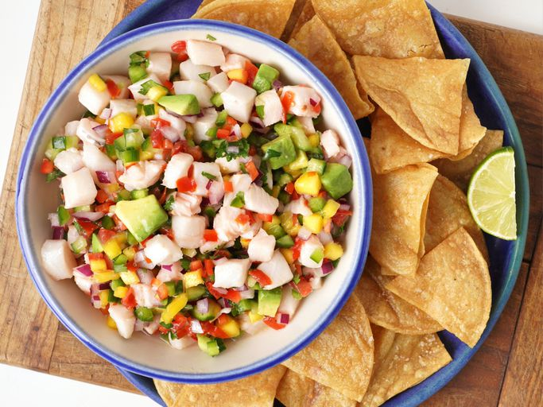

Ceviche

Description
This sea bass ceviche is a juicy freshness overload and truly the best ceviche I've ever had. The flavors are bright, slightly salty, with a kick of heat and a bit of sweetness. Cold and crunchy with tender fish and creamy avocado, the textures are very well balanced. The mango adds a delightful sweet burst.
You can eat it as an entree or snack in any occasion, by yourself or with company.
Ingredients
- 1/3 cup finely diced red bell pepper
- 1/3 cup minced red onion
- 2 jalapenos, minced
- 1/3 cup finely diced tomato
- 1/3 cup finely diced seeded cucumber
- 1/2 mango, finely diced
- 1 pound sea bass, cut into 1/2-inch cubes
- 2/3 cup fresh lime juice (from about 4 limes)
- 3/4 teaspoon kosher salt
- 2 tablespoons extra virgin olive oil
- 3 tablespoons finely chopped cilantro
- 1 avocado, cut into 1/2-inch cubes
- fresh tortilla chips for serving
Steps
- Combine red bell pepper, red onion, jalapenos, tomato, cucumber, mango, sea bass, and lime juice in a bowl. Toss well to coat and refrigerate for 12 minutes, stirring every 4 minutes.
- Stir in salt, oil, and cilantro until well coated.
- Carefully fold in avocado and serve immediately with tortilla chips or tostadas.